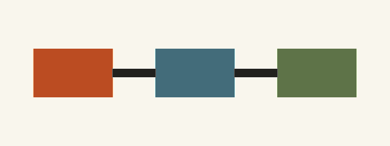

Synthetic fixture · feedflow
Alpha delivery plan
A deliberately fictional planning document used to exercise HTML Shelf rendering without including personal vault content.
Purpose
This page checks typography, layout, relative navigation, asset loading, and long-form reading inside the sandboxed viewer.

Implementation notes
All names and prose in this page are placeholders created for public
testing.
input → transform → verified outputDecision log
| Decision | Reason |
|---|---|
| Use synthetic content | Keep the repository safe to publish. |
| Include an image | Exercise resource URL rewriting. |